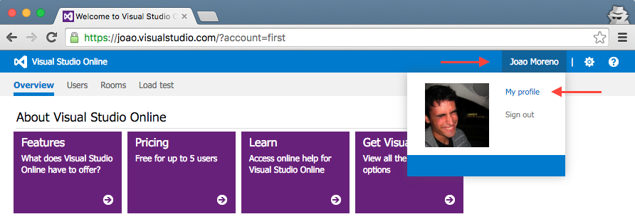
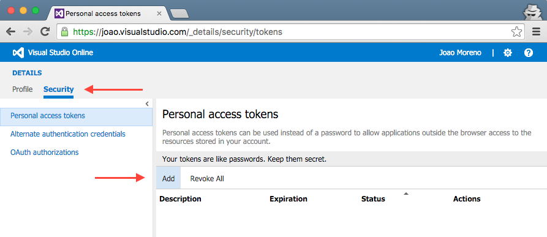
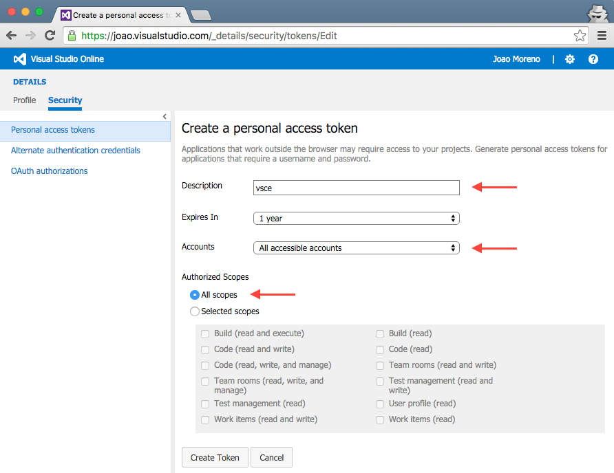

vsce - Publishing Tool Reference
vsce - 发布工具推荐
vsce is the command line tool you'll use to publish extensions to the Extension Marketplace. You can also load extensions locally and share them via email or a UNC drive.
vsce是你用于在Extension Marketplace发布扩展的命令行工具。你也可以在本地加载扩展并通过邮件或UNC drive分享它们。
Installation
安装
Make sure you have node.js installed. Then simply run:
确保你已经安装了node.js。然后便可以简单的运行下方的命令：
npm install -g vsce
Usage
用法
You'll use the vsce command directly from the command line. For example, here's how you can quickly publish an extension:
你可以直接在命令行使用vsce命令。例如，你可以像这样快速发布一个扩展：
$ vsce publish
Publishing uuid@0.0.1...
Successfully published uuid@0.0.1!
For a reference on all the available commands, run vsce --help.
想了解所有可用命令，运行vsce --help即可。
Publishing Extensions
发布扩展
Visual Studio Code leverages Visual Studio Team Services for its Marketplace services. This means that authentication, hosting and management of extensions is provided through that service.
Visual Studio Code 使用 Visual Studio Team Services 为它的商店提供服务。 这意味着可以通过这个服务验证、托管和管理扩展。
vsce can only publish extensions using Personal Access Tokens. You need to create at least one in order to publish an extension.vsce 只可以使用Personal Access Tokens进行发布。为了发布扩展，你至少需要创建一个token。
Get a Personal Access Token
获取一个个人访问标识
First, login to or sign up for Visual Studio Team Services.
首先，使用Visual Studio Team Services进行登录或注册。
Then, from your account's home page https://ACCOUNT.visualstudio.com, go to the My Profile page:
然后, 从你的账户首页 https://ACCOUNT.visualstudio.com, 进入My Profile页面:

Switch to the Security tab and Add a new Personal Access Token:
切换到Security标签并且Add一个新的Personal Access Token:

Give the Personal Access Token a nice description, optionally extend its expiration date to 1 year and make it access every account:
给Personal Access Token添加一个nice的描述, 可以选择扩展它的过期时间最多到一年并且用它访问所有账号:

The next screen will display your newly created Personal Access Token. Copy it, you'll need it to create a publisher.
下一个屏幕将展示一个新创建的Personal Access Token. Copy 它, 你需要创建一个publisher.
Create a Publisher
创建一个Publisher
A publisher is an identity who can publish extensions to the Visual Studio Code Marketplace. Every extension needs to include a publisher name in its package.json file.
publisher用于验证是否能在Visual Studio Code Marketplace上发布扩展。每一个扩展需要在package.json 文件中包含publisher名称。
Once you have a Personal Access Token, you can create a new publisher using vsce:
一旦你有了一个Personal Access Token,你就可以使用vsce创建一个新的publisher:
vsce create-publisher (publisher name)
vsce will remember the provided Personal Access Token for future references to this publisher.vsce会保存这个publisher的Personal Access Token。
Login to a Publisher
登录Publisher
If you already created a publisher before and simply want to use it with vsce:
如果你在使用vsce之前就已经创建了一个publisher：
vsce login (publisher name)
Similarly to the create-publisher command, vsce will ask you for the Personal Access Token and remember it for future commands.
与ycreate-publisher命令很相似, vsce将会要求你提供Personal Access Token并为接下来的命令保存它。
You can also enter your Personal Access Token as you publish with an optional parameter -p <token>.
你也可以使用一个可选参数-p <token>输入你的Personal Access Token进行发布。
vsce publish -p <token>
Auto-incrementing the Extension Version
扩展版本号自动增长
You can auto-increment an extension's version number when you publish by specifying the SemVer compatible number to increment: major, minor, or patch.
当你通过指定SemVer兼容号码增加major, minor, or patch的时候，你的扩展版本号将自动递增。
For example, if you want to update an extension's version from 1.0.0 to 1.1.0, you would specify minor:
例如, 如果你想将扩展的版本从1.0.0更新到1.1.0，你需要指定minor:
vsce publish minor
This will modify the extension's package.json version attribute before publishing the extension.
在发布扩展之前，这么做将会修改扩展的package.json version的属性。
You can also specify a complete SemVer compatible version on the command line:
你也可以在命令行中指定一个完整的deSemVer兼容版本。
vsce publish 2.0.1
Packaging Extensions
包扩展
You may want to simply package extensions without publishing them to the store. Extensions will always be packaged into a .vsix file. Here's how:
你可能想要简单的包扩展而不把他们发布到商店。扩展总是会被打包到.vsix文件。方法如下：
vsce package
This will package your extension into a .vsix file and place it in the current directory. It's possible to install .vsix files into Visual Studio Code. See Installing Extensions for more details.
这条命令会将你的扩展打包到.vsix文件中并放到当前目录下。它可能会安装.vsix文件到Visual Studio Code. 查看安装扩展获取更多细节。
Advanced Usage
高级用法
Marketplace Integration
商店整合
You can customize how your extension looks in the Visual Studio Marketplace. See the Go extension for an example.
你可以自定义你的扩展在Visual Studio Marketplace中的样式。 请查看Go extension这个例子。
Here are some tips for making your extension look great on the Marketplace:
这里有一些让你的扩展在商店中看起来更棒的小提示：
- Any
README.mdfile at the root of your extension will be used to populate the extension's Marketplace page's contents.vscecan fix this for you in two different ways: - 在你的扩展根目录下的
README.md文件中的内容会显示在扩展商店页面上。vsce可以使用两种不同的方式为你修复这个问题: - Likewise, any
LICENSEfile at the root of your extension will be used as the contents for the extension's license. - 同样的，你的扩展根目录下的
LICENSE文件也被作为这个扩展的证书。 - If you add a
repositoryfield to yourpackage.jsonand if it is a public GitHub repository,vscewill automatically detect it and adjust the links accordingly. - 如果你添加一个
repository字段到package.json文件中并且他是一个公开的GitHub仓库，vsce将会自动自动检测到并且根据它来调整链接。 - You can override that behavior and/or set it by using the
--baseContentUrland--baseImagesUrlflags when runningvsce package. Then publish the extension by passing the path to the packaged.vsixfile as an argument tovsce publish. - 在运行
vsce package命令的时候，你可以通过使用--baseContentUrl和--baseImagesUrl参数覆盖或者设置这种行为。 - You can set the banner background color by setting
galleryBanner.colorto the intended hex value inpackage.json. - 你可以在
package.json中设置galleryBanner.color的16进制值来改变banner的背景色。 - You can set an icon by setting
iconto a relative path to a squared128pxPNG file included in your extension, inpackage.json. - 你可以在
package.json设置icon的值为一个在你的扩展目录中的边长128px的正方形PNG文件的相对路径来配置你的扩展图标。
Also see Marketplace Presentation Tips.
也可以看这个商店演示提示.
.vscodeignore
You can create a .vscodeignore file to exclude some files from being included in your extension's package. This file is a collection of glob patterns, one per line.
你可以创建.vscodeignore文件来忽略掉你不想打包到扩展包的文件。 这个文件是glob样式的集合，每行一个。
For example:
例子：
**/*.ts
**/tsconfig.json
!file.ts
You should ignore all files not needed at runtime. For example, if your extension is written in TypeScript, you should ignore all **/*.ts files, like in the previous example.
你应该忽略所有运行时不需要的文件。例如，如果你的扩展是用TypeScript写的，你应该忽略所有的**/*.ts文件，就就像上面的例子那样。
Note: Development dependencies listed in devDependencies will be automatically ignored, you don't need to add them to the .vscodeignore file.
注意: 罗列在devDependencies中的开发依赖会被自动忽略，你不需要把他们添加到.vscodeignore文件中。
Pre-publish step
预发布步骤
It's possible to add a pre-publish step to your manifest file. The command will be called every time the extension is packaged.
添加预发布步骤到你的manifest文件中是可行的。扩展的每次打包都会调用到这个命令。
{
"name": "uuid",
"version": "0.0.1",
"publisher": "joaomoreno",
"engines": {
"vscode": "0.10.x"
},
"scripts": {
"vscode:prepublish": "tsc"
}
}
This will always invoke the TypeScript compiler whenever the extension is packaged.
只要扩展被打包TypeScript编译器总是会被调用。
Next Steps
接下来的步骤
- Extension Marketplace - Learn more about VS Code's public extension Marketplace.
- 扩展商店 - 可以学习更多VSCode公共扩展相关内容的商店。
- Installing Extensions - Learn about other options for installing and sharing extensions.
- 安装扩展 - 学习安装和分享扩展等其他操作。
Common Questions
常见问题
Q: I get 403 Forbidden (or 401 Unauthorized) error when I try to publish my extension?
问题：当我尝试发布我的扩展的时候收到了403禁止的错误。
A: One easy mistake to make when creating the PAT (Personal Access Token) is to not select all accessible accounts in the Accounts field dropdown (instead selecting a specific account). You should also set the Authorized Scopes to All scopes for the publish to work.
回答： 创建PAT (Personal Access Token)的时候在账户下拉框没有选择all accessible accounts（而是选择了指定账户）很容易造成这个错误。为了让发布能正常工作，你还应该将Authorized Scopes设置为All scopes。
Q: I can't unpublish my extension through the vsce tool?
问题：我不能通过vsce工具取消发布我的扩展吗？
A: You may have changed your extension ID or publisher name. You can also manage your extensions directly on the Marketplace by going to the manage page. You can update or unpublish your extension from your publisher manage page.
回答： 你可能修改了你的扩展ID或者publisher名称。你也可以通过manage page来直接管理你的扩展。你可以从发布者管理页面更新或者取消发布你的扩展。